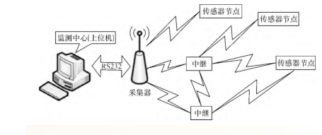
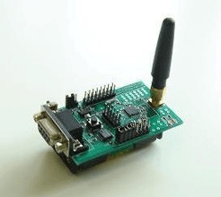

第一屏
广东物联网实验室
气囊船舶下水技术
气压监测系统介绍
第三屏
第四屏
- zigbee的介绍
- zigbee/WIFI
- zigbee/GPRS
基于 ZigBee 的船用气囊压力采集系统结构主要由采集器、传感器节点、中继器以及用于数据显示的上位机等4 部分组成，并从传输链路的可靠性和网络的稳定性角度考虑，采用网状网(MESH)作为本系统的ZigBee 网络拓扑结构。采集器上电启动后就通过应用层、网络层、MAC层之间一系列网络原语通信，完成网络 PANID、网络信道等参数设置,便建立起 ZigBee网络，并进入等待其他子节点加入。中继和传感器节点通过寻找与指定PANID 相匹配的网络并加入网络，成功加入后，传感器节点定时对船用气囊气压进行采集和处理，并将包含有传感器节点短地址、编号、气压值等内容的数据通过ZigBee网络发送给采集器，采集器则将接收到的数据进行处理后经RS232上传到上位机，上位机完成数据处理、分析、存储和集中显示等功能。


笔记本、手机均可以方便的接入WiFi网络，ZigBee在物联网领域有其独特的优势，两个网络如何实现互通，互通之后如何不互相干扰，这是业界一个难题，晓网电子推出的ZigBee&WiFi网关转换器完美的解决了此问题，通过独特的频段分配技术，不仅保留了WiFi自适应频段的问题，又不会干扰ZigBee通讯。ZigBee转WiFi网关广泛应用于智能家居、数据采集、环境监控、远程管理等领域。
ZigBee网络属于个域网（短距离无线通讯）技术，点对点通讯距离上限为5公里，利用智能路由协议接力传输，距离也不会超过100公里，而GPRS属于城域网，只要网络信号覆盖的地方就能通讯，几乎是全球覆盖。
ZigBee网络流量免费，低延迟，可以作为GPRS网络在应用现场的末端分支，借助于GPRS付费流量的全球覆盖，ZigBee网络生成的重要数据，可以传到任意位置的监控中心，两者相辅相成，为物联网的应用搭建了完美的组合平台。
设备接入：通过DeviceConnector组件将异构M2M终端接入到设备云平台中来。
设备管理：树状结构图、GIS地图、组态图形多种展示设备状态方式，远程维护设备参数和设备升级。
数据转发：建立从终端到客户应用的多种数据映射通道，支持单点对多设备，单串口对单设备，单设备对单设备的数据转发模式。
协议转换及协议管理：将异构设备接入统一平台的必要功能。系统具有协议管理接口，用户可按照规范自行编写协议并选择加载。
数据存储：系统智能存储设备运行状态、用户运行数据、运行日志。
数据展示：以表格、图表、组态、仪表板等形式多元展示用户数据。
数据挖掘：提供数据分析及汇总，运营报告，为决策者提供数据支持。
数据发布：提供UDC API接口，拓展第三方应用范围。
终端认证：为终端提供标准的AAA认证机制，可靠的安全性保障。
运营计费：多种计费方式提供强有力的运营支持。
设备云（DeviceCloud），是基于企业云的、面向行业应用的的 M2M 技术架构。主要面向远程 数据采集的行业平台应用，可用于M2M终端的大范围组网和管理。涵盖功能包括设备接入、设备管理、数据转发、数据存储、数据展示、数据挖掘、终端认证、运营计费等几部分。
“设备云”（DeviceCloud）是一种以机器终端交互为核心的、网络化的应用服务。他通过M2M数据采集监控终端、以 无线通信 等为接入手段，为客户提供综合的信息化解决方案，以满足客户对监控、智慧调度、数据采集和测量等方面的信息化需求。